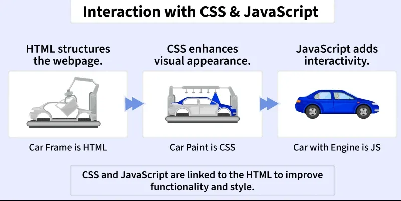
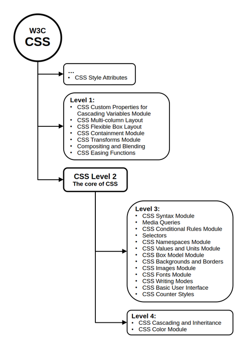
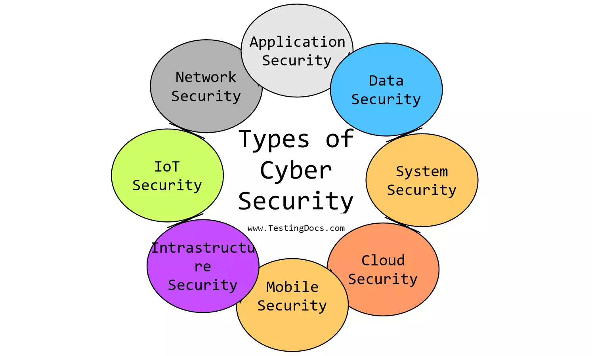

<!DOCTYPE html>
    <html lang="en">
    <head>
        <meta charset="UTF-8">
        <meta name="viewport" content="width=device-width, initial-scale=1.0">
        <title>Document</title>
        <link rel="preconnect" href="https://fonts.googleapis.com">
<link rel="preconnect" href="https://fonts.gstatic.com" crossorigin>
<link href="https://fonts.googleapis.com/css2?family=Bitcount+Grid+Double+Ink:wght@100..900&family=Iosevka+Charon:ital,wght@0,300;0,400;0,500;0,700;1,300;1,400;1,500;1,700&family=Slabo+27px&display=swap" rel="stylesheet">
    </head>
    <body>
        
    </body>
    </html>
    <title>PORTFOLIO</title>
        <link rel="stylesheet" href="style.css">
         </head>
 <body >
    <header>
        <h1><b>MY PORTFOLIO</b></h1>
        <div >
<nav  class="menu">
        <a class="one" href="#">Home</a>
        <a class="two" href="#about">About</a>
        <a class="three" href="#projects">Projects</a>
        <a class="four" href="#contact">Contact</a>
</nav>
</div>
</header>
<br>
<section>
<div>
    </div><br>
     
    <h1 style="color: rgb(9, 38, 133); font-size: 88px;"><br>
                <b>FULL STACK DEVELOPER </b></h1>
                <h2 style="color:black;" ><b>Hello, I'm Anandhi S </b></h2>
</section>          
       <br>

  <!-- About Section -->
<section id="about"></section>
<h1 style="text-decoration: underline"; color= "white";>About Me</h1>
<p>Hello! I'm <b>Anandhi S</b>,I have completed my <b>B.E. in Computer Science Engineering</b> with distinction from<b>RJS</b>College,Bengaluru,<br> where I developed skills in programming, web development, and softwarefundamentals</p>My professional journey includes a<b> Software Testing Internship at Alpha Tech Academy</b>,where I gained real-time experience in<b> manual and automated testing,</b><strong> test case creation</strong>,<b> bug
tracking,</b>and working with testing tools like Selenium. where I developed strong communication, customer interaction, and coordination skills. <br>I'm
known for being a <b>quick learner, patient listener, team player</b>,
 and someone who approaches every task with determination and passion.
    <p>I'm excited to take on new opportunities, where I can apply <strong>my skills</strong>, grow professionally, and
contribute positively to an organization.</p>

<h2 style="color: rgb(7, 28, 120);">Here are some of <span style="color: rgb(210, 30, 150);">My Skills and Experiences:</span></h2>

<ol>
    <li>Developed skills in programming, web development, and software fundamentals.</li>
    <li>Experience with:
        <ul>
            <li><b>HTML</b></li>
            <li><b>CSS</b></li>
            <li><b>Java</b></li>
            <li><b>Python</b></li>
            <li><b>JavaScript</b></li>
        </ul>
    </li>
    <li>Knowledge in <strong>cloud computing</strong>.</li>
    <li>Enjoy applying these skills to build programs and websites.</li>
</ol>


</section>
<!-- Projects Section -->
<section  id="projects">
<h1 style="text-decoration: underline;"><b>MY PROJECTS</b></h1>
      <h2 style="color:rgb(9, 15, 120)"><b>I.HTML AND CSS</b></h2>
      <h2 style="color:darkblue"><b>II.CYBER SECURITY MANAGEMENT SYSTEM(CSMS)</b></h2>
<h2 style="text-decoration: underline;">
    I.HTML -<b>[HyperText Markup Language]</b></h2>
    <article>
<ul>
    <li>It is a <b>markup language</b>, not a programming language.</li>
    <li>This means it <b>annotates text</b> to define how it is structured and displayed by web browsers.</li>
    <li>It is a <b>static language</b>, meaning it does not inherently provide interactive features.</li>
    <li>It can be combined with<b> CSS for styling and JavaScript </b>for interactivity.</li>
    <li><b>Html</b> is the most basic building block of the Web.</li>
    <li> It defines the meaning and structure of web content.</li>
</ul>
</article>
<h3 style="text-decoration: underline;"><b>HTML Elements and HTML Tags</b></h3>
HTML Elements and HTML Tags are related but distinct. An HTML element is the complete structure, including the opening tag, content (if any), and the closing tag (if applicable).
<div style="text-align: center;">    
   <image src="html tag.webp" alt="not found" width="600" height="300"/>
    <p>On the other hand, a tag is the actual keyword or name enclosed in angle brackets (< >) that tells the browser what kind of content to expect.</p>
</div>

<h3 style="text-decoration: underline;"><b>Other technologies</b></h3> 
<p>besides HTML are generally used to describe a web page's appearance/presentation <mark>(CSS)</mark> or functionality/behavior <mark>(JavaScript).</mark><br><b>HTML</b> is a markup language that web browsers use to interpret and compose text, images, and other material into visible or audible web pages.</p>
<div style="text-align: center;">
        
        <h2 style="color:rgba(164, 19, 9, 0.941);"><strong>           html element conetent</strong></h2>
</div>
<ul>
  <li>Tags may also enclose further tag markup between the start and end, including a mixture of tags and text.</li>
  <li>This indicates further (nested) elements, as children of the parent element.</li>
  <li><b>HTML</b> documents imply a structure of nested HTML elements.</li>
  <li>These are indicated in the document by HTML tags, <b>enclosed in angle brackets.</b></li>
  <li>The text content of the element, if any, is placed between these tags.</li>
  <li>Tags may also enclose further tag markup between the <b>start and end</b>, including a mixture of tags and text.
  This indicates further (nested) elements, as children of the parent element.<a href="https://en.wikipedia.org/wiki/HTML#Markup">Click Here for More Details about HTML</a></li>
</ul>
<h3 style="text-decoration: underline;">HTML Attributes</h3>
<div class="Attribute">
<b>HTML Attributes are special words used within the opening tag of an HTML element. They provide additional information about HTML elements. HTML attributes are used to configure and adjust the element's behaviour, appearance, or functionality in a variety of ways.</b>
</div>
<a href="https://www.geeksforgeeks.org/html/html-attributes/">Attributes </a> They are placed inside the opening tag and are written as name="value". Common attributes include class, id, href, and src.
<ul>
  <li>Attributes are written inside the opening tag of an element.</li>
  <li>They are written as name="value" pairs.</li>
  <li>Most HTML elements can have one or more attributes.</li>
  <li>Attributes help in customizing how elements behave or display in a browser.</li>
  <li>Attribute values are usually enclosed in double quotes (").</li>
</ul>
<h2>Interaction of HTML, CSS, and JavaScript</h2>
<p><b>HTML, CSS,</b> and JavaScript work together to create modern web pages. Each plays a unique role - HTML gives structure,<b> CSS adds style</b>, and <b>JavaScript </b>brings interactivity.</p>
<ol>
  <li>HTML structures the webpage and defines content elements.</li>
  <li>CSS enhances visual appearance like colors, fonts, and layout.</li>
  <li>JavaScript adds interactivity and dynamic features.</li>
  <li>Together, they make web pages functional, attractive, and user-friendly.</li>
</ol>
<h3 style="text-decoration: underline;" >How They Work Together</h3>
<p>Take a look at the image below to understand how<b> HTML, CSS, </b>and<b> JavaScript </b>work together to build and enhance a webpage.</p>
<div style="text-align: center;">

</div>
<ul>
  <li><b>HTML </b>acts as the car's frame, forming the foundation.</li>
  <li><b>CSS </b>is like the car's paint, giving it style and design.</li>
  <li><b>JavaScript </b>is the engine, adding motion and behaviour.</li>
  <li>When combined, they create a complete, <b>interactive website.</b></li>
</ul>
<br>
<h1 style="text-decoration: underline; color:rgb(198, 116, 16);">CSS [ Cascading Style Sheets]</h1>
        <p>It is a stylesheet language used to style and enhance <b>website presentation.</b>
        <br>CSS is one of the three main components of a webpage, along with <b>HTML and JavaScript.</b>
        </p>
<ol>
            <li><b>HTML </b>adds structure to a web page.</li>
            <li><b>CSS</b> adds style and makes it visually appealing.</li>
            <li><b>JavaScript</b> adds interactivity and logic to the page.</li>
    </ol>
<p>CSS was released (in 1996), 3 years after HTML (in 1993). The main idea behind its use is that it allows the separation of content (HTML) from presentation (CSS). This makes websites easier to maintain and more flexible.</p>
<ol>
  <li><b>Cascading Style Sheets</b> (CSS) is a style sheet language used for specifying the presentation and styling of a document written in a markup language, such as <strong>HTML or XML.</strong></li>
  
  <li>It also supports<strong> XML</strong> dialects such as<b> SVG, MathML, or XHTML.</b></li>
  
  <li>CSS is a cornerstone technology of the World Wide Web, alongside<b> HTML and JavaScript.</b></li>
  
  <li>CSS is designed to enable the separation of content and presentation, including <b>layout, colors, </b>and <b>fonts.</b></li>
</ol>
<div style="text-align: center;">

    <h2 style="color:rgb(208, 16, 16);"><strong>            CSS has various levels and profiles </strong> </h2>
</div>
Each level of <b>CSS </b>builds upon the last, typically adding new features and typically denoted as<br> <strong>CSS 1, CSS 2, CSS 3,</strong> and <b>CSS 4.</b> Profiles are typically a subset of one or more levels of CSS built for a particular device or user interface.<br> Currently, there are <b>profiles for mobile devices, printers, and television sets.</b>

<div> 
    <h2><b>CSS 1</b></h2>
    <div class="css1">
        The first CSS specification to become an official W3C Recommendation is CSS level 1, published on 17 December 1996. <br>Håkon Wium Lie and Bert Bos are credited as the original developers.</div>
</div>
<ul>
  <li>Font properties such as typeface and emphasis</li>
  <li>Color of text, backgrounds, and other elements</li>
  <li>Text attributes such as spacing between words, letters, and lines of text</li>
  <li>Alignment of text, images, tables and other elements</li>
  <li>Margin, border, padding, and positioning for most elements</li>
  <li>Unique identification and generic classification of groups of attributes</li>
</ul>
<div>
    <h2><b>CSS 2</b></h2>
    <div class="css2">
        CSS level 2 specification was developed by the W3C and published as a recommendation in May 1998.</div>
</div>

<p>A superset of CSS 1, CSS 2 includes a number of new capabilities like absolute, relative, and fixed positioning of elements and z-index, <br>the concept of media types, support for aural style sheets (which were later replaced by the CSS 3 speech modules) and bidirectional text, and new font properties such as shadows.</p>
<h2 ><b>CSS3</b></h2>
<div >
<p>CSS 2, which is a large single specification defining various features, CSS 3 is divided into several separate documents called "modules". Each module adds new capabilities or extends features defined in CSS 2, preserving backward compatibility. Work on CSS level 3 started around the time of publication of the original CSS 2 recommendation. The earliest CSS 3 drafts were published in June 1999.</p>
</div>
<h1 style="text-decoration: underline; color:rgb(84, 6, 50);">CSS Properties</h1>
<p>This section covers important<b> CSS</b> properties that control how elements look and work on a webpage.Start with CSS Display to learn how elements are shown and arranged.
  <div class="click here">
<a href="about properties">Click here /Touch the box</a>

<div class="content" >
    <ul style="color:rgb(244, 234, 234)">
            <h2 style="color:rgb(9, 9, 8)"><b>PROPERTIES:</b></h3><li>CSS Display</li><li>CSS Backgrounds</li>
            <li>CSS Borders</li>
            <li>CSS Font</li>
            <li>CSS Colors</li>
            <li>CSS Margins</li>
            <li>CSS Padding</li>
            <li>CSS Position</li>
            <li>CSS White Space</li>
            <li>CSS Height and Width</li>
            <li>CSS OverFlow</li>
            <li>CSS Shadow</li>
</div>
<h2>1.CSS DISPLAY</h2>
<P>The CSS display property determines how an element is displayed on a webpage, defining its layout behavior and how it interacts with other elements.
    <ul>
    <li>It specifies the type of rendering box an element generates.</li>
    <li>Controls whether an element is shown as a block, inline, flex, grid, etc.</li>
    <li>Affects the layout structure and overall page flow.</li>
    </ul>
</P>
<h2>2.CSS Bagrounds</h2>
The CSS background is the area behind an element's content, which can be a <b>color, image,</b> or both. The background property lets you control these aspects, including<b> color, image, position, and repetition.</b>
<h2>3.CSS Boders</h2>
CSS borders define the outline around an HTML element, providing visual separation and emphasis within a webpage layout.
<ul>
<li>Width is determined by the thickness of the border.</li>
<li>Style is defined by the appearance of the border<b> (solid, dashed, dotted, etc.).</b></li>
<ol>
<li><b>border-style</b> is used to set the type of border around an element.</li>
<li><b>dotted:</b> Creates a border with dots.</li>
<li><b>dashed:</b> Creates a border with dashed lines.</li>
<li><b>solid:</b> Creates a solid, continuous border.</li>
<li><b>double:</b> Creates a border with two solid lines.</li>
</ol>

<li>Color is specified by the chosen hue of the border.</li>
<li>Borders can be applied to all sides or specific edges of an element.</li>
</ul>
<h2>4.CSS Fonts</h2>
CSS fonts are used to style and enhance the appearance of text on a webpage, making it more readable and visually appealing. They help control how text looks and fits within the overall design.
CSS fonts are used to style and enhance the appearance of text on a webpage, making it more readable and visually appealing. They help control how text looks and fits within the overall design.
<ul>
<li><b>font-family:</b> Specifies the font type.</li>
<li><b>font-size:</b> Determines the size of the text.</li>
<li><b>font-weight:</b> Adjusts the thickness of the text.</li>
<li><b>font-style:</b> Controls the slant of the text (e.g., italic).</li>
<li><b>line-height:</b> Sets the space between lines of text.</li>
<li><b>letter-spacing:</b> Modifies the space between characters.</li>
<li><b>text-transform:</b> Controls the capitalization of text.</li>
</ul>
<h2>5.CSS Colors</h2>
CSS colors are used to change the look of text, backgrounds, borders, and other elements on a webpage. They help make a site more attractive and easy to read.
<ol>
  <li>Colors can be set using names, HEX codes, RGB, RGBA, HSL, or HSLA values.</li>
  <li>Used to style text, backgrounds, and borders.</li>
  <li>Help create contrast, highlight content, and improve visual design.</li>
</ol>
<ul>
<li><b>Background Color (background-color):</b> #FF5733; adds a bright red-orange background, and <b>padding: 20px;</b> provides inner spacing.</li>
<li><b>Text Color (color):</b> rgb(255, 0, 0); sets the text to red, and <b>font-size: 20px;</b> makes it larger.</li>
<li><b>Border Color (border):</b> 5px solid rgba(0, 255, 0, 0.5); adds a semi-transparent green border with <b>padding: 10px;</b> and <b>margin: 10px;</b> for spacing.</li>
<li><b>Hover Effects:</b> background-color: hsl(120, 100%, 50%); gives a bright green background that changes to a lighter transparent green on hover.</li>
</ul>
<h2>6.CSS Margins</h2>
CSS margins are used to create space outside an element’s border, helping to separate it from other elements on a webpage. They help in organizing the layout and preventing content from appearing too close together.
<b>Types of Margin Values</b>
<ol>
<li><b>Pixels (px):</b> The most common unit, specifies a fixed number of pixels.</li>
<li><b>Percentage (%):</b> The margin is calculated as a percentage of the containing element's width (for horizontal margins) or height (for vertical margins).</li>
<li><b>Other units:</b> Less common units like em, rem, vh, and vw can also be used for relative sizing.</li>
<li><b>Auto:</b> The browser calculates a suitable margin size, often used for centering elements.</li>
</ol>
<h2>7.CSS Padding</h2>
CSS Padding property is used to create space between the element's content and the element's border. It only affects the content inside the element. CSS padding is different from <b>CSS margin</b> as the margin is the space between adjacent element borders and padding is the space between content and element's border.
We can independently change the top, bottom, left, and right padding using padding properties.
<ul>
  <li><b>padding-top:</b> Sets the padding for the top side of the element.</li>
  <li><b>padding-right:</b> Sets the padding for the right side of the element.</li>
  <li><b>padding-bottom:</b> Sets the padding for the bottom side of the element.</li>
  <li><b>padding-left:</b> Sets the padding for the left side of the element.</li>
</ul>
<h2>8.CSS Positioning Elements</h2>
CSS positioning is used to control the placement of elements on a web page. It allows elements to be positioned relative to the normal document flow, the browser window, or other elements.
<ul>
<li><b>The position property:</b> defines how an element is positioned.</li>
<li><b>Common position values:</b> static, relative, absolute, fixed, and sticky.</li>
<li><b>Positioning works with:</b> top, right, bottom, and left properties.</li>
<li>It helps create flexible layouts, overlays, and responsive designs.</li>
</ul>
<h3 style="text-decoration: underline; "><b>Given below the different types of Positioning:</h3></b>
<ol>
<li><b>Static Positioning:</b> Default positioning of elements; follows normal document flow.</li>
<li><b>Relative Positioning:</b> Element is positioned relative to its normal position using top, bottom, left, or right.</li>
<li><b>Absolute Positioning:</b> Element is positioned relative to its nearest positioned ancestor (not static).</li>
<li><b>Fixed Positioning:</b> Element is positioned relative to the viewport and stays fixed when scrolling.</li>
<li><b>Sticky Positioning:</b> Element toggles between relative and fixed based on scroll position.</li>

</ol>

<h2>9.CSS white-space Property</h2>
The <b>white-space property</b> in CSS is used to control text wrapping and white-space handling within elements. It allows developers to specify how whitespace inside an element is managed, impacting the layout and readability of the content. Several values can be used with this property to achieve different effects.


<h2>10.CSS Height and Width</h2>
The CSS height and width properties are used to define the size of an element. They help control how much space an element occupies on a webpage, ensuring proper layout and design consistency. 
The width and height properties in CSS are used to define the dimensions of an element. The values can be set in various units, such as pixels (px), centimeters (cm), percentages (%), etc.
<h2>11.CSS Overflow</h2>
CSS overflow controls how content is handled when it doesn’t fit inside an element’s box. It helps manage scrolling and visibility of extra content.
<ol>
<li>Can hide, scroll, or show overflowing content.</li>
<li>Common values include visible, hidden, scroll, and auto.</li>
<li>Useful for keeping layouts neat and preventing content overlap.</li>
</ol>
<b>Property Values overflow:</b>
The overflow property contains the following values: 
	<ul>
  <li><b>visible:</b> The content is not clipped and is visible outside the element box.</li>
  <li><b>hidden:</b> The overflow is clipped and the rest of the content is invisible.</li>
  <li><b>scroll:</b> The overflow is clipped but a scrollbar is added to see the rest of the content. The scrollbar can be horizontal or vertical.</li>
  <li><b>auto:</b> It automatically adds a scrollbar whenever it is required.</li>
</ul>
<h2>12.CSS Shadow Effect</h2>
The shadow effect property in CSS is used to add shadows to text and images in HTML documents. This enhances the visual appeal and depth of your web elements, making your design more engaging.<br>
<b>1.Text Shadow:</b>
The text-shadow property in CSS is used to display text with a shadow. This property defines the offset, blur radius, and color of the shadow.<br>
<b>2.Box Shadow:</b>
The box-shadow property in CSS applies a shadow effect to elements such as text boxes, divs, and images. This property defines the horizontal and vertical offsets, blur radius, spread radius, and color of the shadow.
<a href="https://en.wikipedia.org/wiki/CSS">Click Here for More Details about CSS</a>
<br>
<h1 style="color:rgb(180, 17, 15)";>II.CYBER SECURITY MANAGEMENT SYSTEM</h1>
<h2>Cyber Security Management System (CSMS)</h2>

<p>A Cyber Security Management System is a form of Information security management system, particularly focussed on protecting automation and transport systems<br>A Cyber Security Management System (CSMS) is a structured framework used by organizations to manage and protect their digital systems, networks, and data from cyber threats.
It includes a set of policies, procedures, tools, and practices designed to identify risks, prevent attacks, and respond to security incidents effectively.</p>

<div>
  <div class="gallary">
    
    
    
  </div>
</div>
<div class="types">
<h1><u>Types of Cyber security system</u></h1><br> 
<ul><li>application  Security in Cyber Security</li> 
<li>Data Security in Cyber Security</li>
<li>System Security in Cyber Security</li>
<li>Cloud Security in Cyber Security</li>
<li>Mobile Security in Cyber Security </li>
<li>Infrastructure Security in Cyber Security </li>
<li>IoT Security in Cyber Security</li>
<li>Network Security in Cyber Security </li>
</ul>
</div>
<div style="text-align: center;">
</div>

<h2 style="text-decoration: underline; color:rgb(34, 17, 180);">1.Application Security in Cyber Security</h2>
Application Security protects software applications from threats during design, development, deployment, and maintenance.
  <div class="boxes" >Importance:
    <ul >
      <li>Applications store sensitive data</li>
      <li>Major target of cyberattacks</li>
      <li>Prevents data breaches, financial loss, and legal issues</li>
      <li>Required for GDPR, PCI DSS, HIPAA</li>
    </ul>
  </li>
</div>
<li><b>Common Threats:</b> Injection, XSS, CSRF, Broken Authentication, Data Exposure, Misconfiguration, Insecure APIs (OWASP Top 10)</li><br>
<li><b>Security Techniques: </b>Secure coding, MFA & RBAC, Encryption, WAF, Secure sessions</li><br>
<li><b>Testing:</b> SAST, DAST, IAST, Pen Testing, Fuzz Testing</li><br>
<li><b>SDLC:</b> Security in all phases → DevSecOps</li><br>
<li><b>Tools:</b> SonarQube, Checkmarx, OWASP ZAP, Burp Suite, Snyk, Cloudflare WAF</li>
<h2 style="text-decoration: underline; color:rgb(26, 9, 120);">2.Data Security in Cyber Security</h2>
    Data Security is a branch of cybersecurity that focuses on protecting data from unauthorized access, disclosure, alteration, and destruction throughout its lifecycle—creation, storage, transmission, and usage.<br>
    <b>It ensures that data remains:</b>
    <ul>
    <li>Confidential</li>
    <li>Accurate</li>
    <li>Available</li>
    </ul>
<h2 style="text-decoration: underline; color:rgb(19, 10, 146);">3.System Security in Cyber Security</h2>
      System Security protects computer systems, servers, OS, and hardware from cyber and physical threats.
      <b>Objectives:</b> CIA Triad + Authentication, Authorization, Accountability
      <b>Importance:</b> Prevents downtime, data breaches, malware attacks, and ensures business continuity
      <b>Threats:</b> Malware, Ransomware, Unauthorized access, DoS, Insider threats, Unpatched OS
      <b>Controls:</b>
      <ul>
          <li>OS updates & system hardening</li>
          <li>MFA & RBAC</li>
          <li>Antivirus & firewalls</li>
          <li>Monitoring & logging</li>
          <li>Backup & recovery</li>
          <li>Physical security (CCTV, biometrics)</li>
      </ul>

<h2 style="text-decoration: underline; color:rgb(7, 13, 118);">4.Cloud Security in Cyber Security</h2>
      <p>Cloud Security protects cloud data, applications, and services from cyber threats.</p>
      <b>Cloud Models:</b> Public, Private, Hybrid<br>
      <b>Based on:</b> CIA Triad<br>
      <b>Importance: </b>Prevents data breaches, ensures availability, meets compliance, builds trust<br>
      <b>Threats: </b>Data breaches, Insecure APIs, Account hijacking, Misconfiguration, DDoS<br>
      <b>Controls:</b>
      <ul>
          <li>IAM with MFA & RBAC</li>
          <li>Encryption (at rest & transit)</li>
          <li>Secure configuration</li>
          <li>Network security (firewalls, VPC)</li>
          <li>Monitoring & logging</li>
      </ul>
      <b>Tools: </b>IAM, Cloud WAF, CASB, Encryption & monitoring tools

<h2 style="text-decoration: underline; color:rgb(21, 21, 148);">5.Mobile Security in Cyber Security</h2>
      <p>Mobile Security protects smartphones, tablets, apps, and mobile data.</p>
      <b>Objectives: </b>Confidentiality, Integrity, Availability, Privacy<br>
      <b>Importance: </b>Mobile devices store sensitive data and use public networks<br>
      <b>Threats: </b>Malware apps, Phishing/Smishing, Unsecured Wi Fi, Device theft, OS vulnerabilities<br>
      <b>Techniques:</b><br>
      <ul>
          <li>Device authentication (PIN, biometrics, MFA)</li>
          <li>App security & permissions</li>
          <li>Encryption</li>
          <li>Mobile Device Management (MDM)</li>
          <li>VPN for secure networks</li>
          <li>Regular OS updates</li>
      </ul>

<h2 style="text-decoration: underline; color:rgb(26, 9, 134);">6.Infrastructure Security in Cyber Security</h2>
      <b>Infrastructure Security</b> protects IT infrastructure like networks, servers, data centers, and facilities.<br><br>
      <b>Components:</b> Network devices, servers, storage, VMs, data centers<br>
      <b>Objectives:</b> CIA Triad, business continuity, disaster recovery<br>
      <b>Importance:</b> Infrastructure is the backbone of IT operations<br>
      <b>Threats:</b> DDoS, Malware, Insider threats, Physical attacks, Natural disasters<br>
      <b>Controls:</b><br>
      <ul>
          <li>Network security (Firewalls, IDS/IPS, segmentation)</li>
          <li>Server security (patching, hardening)</li>
          <li>Access control (RBAC, MFA)</li>
          <li>Physical security (CCTV, UPS)</li>
          <li>Monitoring & incident response</li>
          <li>Secure cloud & virtual infrastructure</li>
      </ul>
<h2 style="text-decoration: underline; color:rgb(21, 11, 138);">7.IoT Security in Cyber Security</h2>
<b>IoT Security</b> protects connected devices, data, and networks.<br>
<b>IoT Devices:</b> Smart homes, wearables, industrial, healthcare, smart cities<br>
<b>Objectives:</b> Confidentiality, Integrity, Availability, Device trust<br>
<b>Importance:</b> IoT devices handle sensitive data and have limited security<br>
<b>Threats:</b> Weak passwords, Botnets, Insecure communication, Firmware flaws, Data leakage<br>
<b>Techniques:</b><br>
<ul>
    <li>Strong device authentication</li>
    <li>Encrypted communication</li>
    <li>Firmware updates</li>
    <li>Network segmentation</li>
    <li>Continuous monitoring</li>
</ul>
<b>IoT Security Layers:</b>
<ul>
<li>Device layer</li>
<li>Network layer</li>
<li>Cloud/Application layer</li>
</ul>
<h2 style="text-decoration: underline; color:#1c0576;">8.Network Security in Cyber Security</h2>
<b>Network Security</b> protects networks and data in transit from cyber threats.<br>
<b>Objectives:</b> CIA Triad, authentication, controlled access<br>
<b>Importance:</b> Ensures safe communication and uninterrupted services<br>
<b>Threats:</b> Malware, Hacking, DDoS, MITM, Phishing, Packet sniffing<br>
<b>Controls:</b><br>
<ul>
    <li>Firewalls</li>
    <li>IDS/IPS</li>
    <li>Encryption (HTTPS, TLS)</li>
    <li>MFA & RBAC</li>
    <li>Network segmentation</li>
    <li>VPN</li>
</ul>


<div class="data">
  <p class="pass1">
    <b><u>UESE OF CYBER SECURITY:</u></b>
          This includes securing wireless networks, protecting against malware, and ensuring that businesses and individuals can safely use the internet without fear of intrusion.<br> Firewalls, VPNs (Virtual Private Networks), and intrusion detection systems are commonly used for network security.
          </p>

  <p class="pass2">
    <b><u>advantages of cyber security</u></b> <br> 
    Cybersecurity provides essential protection against digital threats, securing sensitive data, preventing financial loss, and ensuring business continuity. It safeguards personal identities, maintains customer trust, and ensures regulatory compliance. Additionally, it protects infrastructure, such as networks and devices, from malware and unauthorized access.
</p>
    <p  class="pass3">
     <b><u>Disadvantages of cyber security</u></b> <br> 
    The main disadvantages of cybersecurity include high implementation costs, increased system complexity, and significant user inconvenience, such as frequent password changes. It requires specialized expertise, offers no 100% guarantee of safety, and can create a false sense of security that leads to human error, such as clicking malicious links.
  </p>
</div>
<h1  style="text-decoration: underline; color:rgb(211, 16, 16);">IMPORTANCE OF CYBER SECURITY</h1>
<P>Cyber security is essential in today's digital world to protect systems, networks, and data from cyber threats.</P>
<div class="importance">
<h2><b>Its importance includes:</b></h2>
<h3 style="text-decoration: underline; "><b>1.Prevention of Cyber Attacks:</b></h3>
Helps defend against threats like malware, phishing, hacking, and ransomware.
<h3 style="text-decoration: underline; "><b>2.Ensures Privacy:</b></h3>
Protects user privacy by keeping confidential information secure.<br>
<h3 style="text-decoration: underline; "><b>3.Maintains Business Continuity:</b></h3>
Prevents disruptions and ensures smooth operation of systems and services.<br>
<h3 style="text-decoration: underline; "><b>4.Builds Trust:</b></h3>
Increases customer confidence by ensuring data safety and secure transactions.<br>
<h3 style="text-decoration: underline; "><b>5.Compliance with Laws:</b></h3>
Helps organizations follow legal and regulatory requirements.<br>
<h3 style="text-decoration: underline; "><b>6.Protects Financial Assets:</b></h3>
Prevents financial losses caused by cyber attacks and fraud.<br>
<h3 style="text-decoration: underline; "><b>7.Safeguards Reputation:</b></h3>
Avoids damage to an organization's reputation due to data breaches or security failures.
</div>
</section>

<section id="contact">
<h1 style="color:rgb(4, 44, 189)"><b>Contact Me</b></h1>

<form>
<label for="name">Name:</label><br>
<input type="text" id="name" name="name" required><br><br>

<label for="email">Email:</label><br>
<input type="email" id="email" name="email" required><br><br>

<label for="subject">Subject:</label><br>
<input type="text" id="subject" name="subject" required><br><br>

<label for="message">Message:</label><br>
<textarea id="message" name="message" rows="5" required></textarea><br><br>

<button type="submit">Send Message</button>
</form>
</section>
<!-- Footer -->
<footer>
<p ><a href="file:///C:/MY%20WEBSITE/portfolio/index.html#contact">© 2026 My Portfolio</a></p>

<a href="https://wa.me/911234567890">

</a>

<a href="mailto:example@gmail.com">

</a>

<a href="https://instagram.com/yourusername">

</a>
<a href="https://youtube.com/yourchannel">

</a>
</footer>
</body>
</html>
    